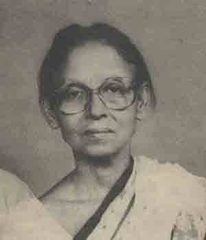

<html>

<head>
<meta http-equiv="Content-Type" content="text/html; charset=windows-1252">
<meta name="GENERATOR" content="Microsoft FrontPage 4.0">
<meta name="ProgId" content="FrontPage.Editor.Document">
<title>Ila Mitra - A Tribute</title>
</head>

 

 <body background="../../mukto_thinker_wm1.jpg" bgproperties="fixed">

<blockquote>
  <p class="MsoBodyText" align="center"><font color="#000080"><b style="mso-bidi-font-weight: normal"><font size="5">&nbsp;</font></b></font></p>
  <div align="center">
    <center>
                            <TABLE ID="NavigationBar2" BORDER=0 CELLSPACING=1 WIDTH=606 height="1">
                                <TR VALIGN=TOP ALIGN=LEFT>
                                    <TD WIDTH=101 height="1" align="center">
                                    <A HREF="../../index.html"><font size="2">
                                    </font></A></TD>
                                    <TD WIDTH=101 height="1" align="center">
                                    <A HREF="../../Articles/articles.html"><font size="2">
                                    </font></A></TD>
                                    <TD WIDTH=101 height="1" align="center">
                                    <A HREF="../../Recent_Debate/recent_debate.html"><font size="2">
                                    </font></A></TD>
                                    <TD WIDTH=101 height="1" align="center">
                                    <A HREF="../../Special_Event_/special_event_.html"><font size="2">
                                    </font></A></TD>
                                    <TD WIDTH=101 height="1" align="center">
                                    <A HREF="../../Moderators/moderators.html"><font size="2">
                                    </font></A></TD>
                                    <TD WIDTH=101 HEIGHT=1 align="center">
                                    <A HREF="../../Forum/forum.html"><font size="2">
                                    </font></A></TD>
                                </TR>
                                <TR VALIGN=TOP ALIGN=LEFT>
                                    <TD WIDTH=101 align="center" bgcolor="#BFD8D9" height="6">
                                      <p align="left"><font size="2" color="#FFFFFF">&nbsp;<a href="../../women/index.html"><b>Women</b></a></font></TD>
                                    <TD WIDTH=202 bgcolor="#BFD8D9" align="center" colspan="2" height="6"><font size="2" color="#FFFFFF">
                                    <a href="../../human_rights/index.html"><b>Human
                                      Rights violation</b></a></font></TD>
                                    <TD WIDTH=202 bgcolor="#BFD8D9" align="center" colspan="2" height="6"><font size="2" color="#FFFFFF">
                                    <a href="../index.html"><b>Great
                                      Personalities&nbsp;</b></a></font></TD>
                                    <TD WIDTH=101 HEIGHT=6 align="center" bgcolor="#BFD8D9">
                                      <p align="left"><font size="2" color="#FFFFFF">&nbsp;<a href="../../humour/index.html"><b>Humor</b></a></font></TD>
                                </TR>
                            </TABLE>
    </center>
  </div>
  <div align="center">
    <table cellSpacing="0" cellPadding="0" width="600" border="0">
      <tbody>
        <tr>
          <td colSpan="2" rowSpan="3"></td>
          <td class="k" bgColor="#6fb1d9"></td>
          <td align="right" colSpan="2" rowSpan="3"></td>
        </tr>
        <tr>
          <td class="h" bgColor="#eef5fa" height="22">
            <p align="center">&nbsp;</p>
          </td>
        </tr>
        <tr>
          <td class="k" width="1" bgColor="#6fb1d9"></td>
        </tr>
        <tr>
          <td class="k" width="1" bgColor="#6fb1d9"></td>
          <td width="18" bgColor="white"></td>
          <td bgColor="#FFFFFF">
  <font face="Arial" size="2">
  <p align="left">Dear Muktomonas,&nbsp;</p>
  <p align="left">With due respect I remember the great peasant leader of
  Bangladesh of 50's- Comrade Ila Mitra. Here is my tributes to her
  memory.&nbsp;</p>
  <p align="left">Ajoy Roy</p>
  <p align="left"><span style="FONT-FAMILY: 'Times New Roman'">18. 10. 02.</span></p>
  <p style="TEXT-ALIGN: center" align="center">=============================================================</p>
  </font>
  <h1 style="TEXT-ALIGN: center" align="center"><b><font size="5" color="#000080" face="Times New Roman">Comrade
  Ila Mitra: A tribute [Part I]</font></b></h1>
  <font face="Arial" size="2">
  <h1 style="TEXT-ALIGN: center" align="center"><b><font color="#000080"><span style="font-size: 14pt; mso-bidi-font-size: 10.0pt">-</span></font></b></font><b><font size="5" color="#000080" face="Times New Roman">Ajoy
  Roy</font></b></h1>
  <font face="Arial" size="2">
  <p class="MsoNormal" style="TEXT-ALIGN: center" align="center"></p>
  <p class="MsoNormal" style="TEXT-ALIGN: center" align="center"><i>Pic: <font face="Arial" size="2">The
  legendary Ila Mitra (1971), peasant leader of 50s</font><b><span style="font-size: 14pt; mso-bidi-font-size: 10.0pt"><o:p>
  </o:p>
  </span></b></i></p>
  <p class="MsoNormal"></p>
  <p class="MsoNormal"><font color="#000080">Ila Mitra, the legendary peasant
  leader of undivided Bengal, a veteran leader of the communist movement in the
  sub-continent, a dedicated friend to the cause of our war of liberation in
  1971, breathed her last in Kolakata (Calcutta) on Sunday, 13<sup>th</sup>
  October afternoon at PG hospital, Kolkata (Calcutta), West Bengal. It was
  learnt from ETV-Calcutta TV channel that following a severe heart attack some
  time back she had been under treatment in the PG hospital. She was 77. I
  remember her today with due respect and solemnity.</font><span style="mso-spacerun: yes"><font color="#000080">&nbsp;</font></span></p>
  <p class="MsoNormal" style="TEXT-ALIGN: justify"><font color="#000080">In
  Rajshahi district, Nachol, a police station at that time of greater Rajshahi
  became the centre of peasant movement, known as Tebhaga Andolan in the
  district. Ila Mitra, an athlete of no mean calibre before she was married to a
  zaminder son of that locality, deeply got involved in the movement encouraged
  by his husband and ultimately became 'Rani Ma' (queen-mother) of the peasants
  of the locality. But who is Ila Mitra to the present generation, particularly
  of Bangladesh ? Is the name bear any significance to them ? Perhaps not.<span style="mso-spacerun: yes">&nbsp;</span></font></p>
  <p class="MsoNormal"><font color="#000080"><b>&nbsp;</b><font size="4"><b><span style="font-size: 14pt; mso-bidi-font-size: 10.0pt; background-color: #EEF5FA">Who
  is Ila Mitra ?</span></b><span style="FONT-SIZE: 14pt; mso-bidi-font-size: 10.0pt"><o:p>
  </o:p>
  </span></font></font></p>
  <p class="MsoNormal"><font color="#000080">Ila Sen, her maiden, was a daughter
  of a simple middle class government service holder. Their original home was at
  the village named Bagutia in the then Jenidah Subdivision of Jessore district.
  Her father, Nagendra Nath Sen was an accountant of AGB office, Calcutta when
  Ila was born on 18<sup>th</sup> October in 1925. She completed her education
  at Calcutta- studying at Bethun School &amp; College under Calcutta
  University. She passed BA with honours in Bengali literature in 1944. She
  finally obtained her MA degree in Bangla literature and Culture from Calcutta
  University as a private candidate in 1958 after long 13 years of passing BA.
  Why? That is part of her story.<span style="mso-spacerun: yes">&nbsp;</span></font></p>
  <p class="MsoNormal" style="TEXT-ALIGN: justify"><font color="#000080">It
  might appear strange to many of us such a political personal was a champion
  athlete in her school and college days. In the decade of thirties she was a
  star woman in the world of sports in Bengal. She was junior champion athlete
  in Bengal Presidency from 1935 &#19; 1938. She was a good basketball player
  too. She was selected to represent India in athletics in Olympic games
  scheduled to be held in 1940 in Japan, which however could not be held because
  of World War II. In 1944, she got married with Ramendra Nath Mitra, son of a
  Zemindar family of Ramchandrapur, then under Maldah district of British Bengal
  adjacent to present district of Nawabganj in Bangladesh. Ramendra however not
  only a son of a Zemindar family, but himself an organizer of the communist
  movement in Maldah. He was a district president of Peasant Association.</font></p>
  </font>
  <h5><font size="4" color="#000080" face="Arial"><b><span style="font-size: 14pt; mso-bidi-font-size: 10.0pt; background-color: #EEF5FA">Ila
  Mitra's Political association</span></b></font></h5>
  <font face="Arial" size="2">
  <p class="MsoNormal" style="TEXT-ALIGN: justify"><font color="#000080">Through
  marriage she first became aware of the peasant movement in northern region of
  undivided Bengal. But even before her marriage she got involved with politics
  of left through Students Federation, a left oriented students' organization
  and Women Self Defense Association (<i>Mahila Atama Raksha Samity</i>). She
  became very much active in communist movement in early forties, as a result of
  which she got the membership of Communist Party of India (CPI) at the age of
  only 18 years. After marriage she moved to Ramchandrapur as a newly married
  bride of a conservative traditional Hindu family. The couple had their only
  son born in 1948, while Ila Mitra was organizing peasant movement in the
  locality of Nachol under the directives of CPI.<span style="mso-spacerun: yes">&nbsp;&nbsp;</span></font></p>
  <p class="MsoNormal" style="TEXT-ALIGN: justify">&nbsp;</p>
  </font>
  <p class="MsoNormal"><b><font size="4" color="#000080" face="Arial"><span style="font-size: 14pt; mso-bidi-font-size: 10.0pt; background-color: #EEF5FA">&nbsp;Tebhaga
  Movement </span></font></b><font face="Arial" size="2"><font color="#000080"><span style="TEXT-DECORATION: none; text-underline: none"><o:p>
  </o:p>
  </span></font></p>
  </font>
  <h2><font color="#000080" face="Arial" size="2">Ila Mitra came to prominence
  during 1948, just after partition of Bengal in 1947 for her revolutionary
  leadership to peasant movement, popularly known as 'Tebhaga Andolan', as we
  mentioned earlier.</font></h2>
  <font face="Arial" size="2">
  <p class="MsoNormal" style="TEXT-ALIGN: justify"><font color="#000080">The
  Bengali word 'Tebhaga' means division in three parts. The objective of the
  movement among the peasant class was that a cultivating peasant must get
  two-third share of the total yield divided into three and rest one third would
  go to the owner of the land. The necessary political leadership to the
  movement came from the Bengal Peasant Association, a front organization of the
  peasants and landless agriculture laborer of CPI. The movement took serious
  turn and reached its peak in 1946. It became very popular in north Bengal
  particularly in the districts of Jalpaiguri, Dinajpur, Maldah, Rajshahi,
  Rangpur, Bogra and adjacent part of Pabna.</font></p>
  <p class="MsoNormal" style="TEXT-ALIGN: justify"><font color="#000080">In
  order to understand tebhaga movement we have to understand the land
  distribution system in that area. At the top of the land owning system was the
  class of zeminders who got lease of lands through permanent settlement of the
  British law. These zemindars have no direct link with the cultivation of lands
  owned by them. The link between the zemindars and the British government was
  that zemindars would pay a yearly tax fixed by the government depending on
  quantity and quality of the lands owned by the zemindars. How these lands
  would be cultivated, developed and what income would be generated was left to
  the zemindars. At the next bottom of etalon was the class jotdars to whom the
  zemindars distributed lands through a system called 'Pattani'. The pattani was
  achieved through negotiation on the basis of fixed taxes to be renewed and
  reviewed time to time. The jotdars class was the real people directly
  connected with lands and cultivation. Although outside the 'jotdari system'
  there were many land owning individuals, small and big who directly pay their
  land taxes to the zemindars through the 'Nayebi &#19; Tahsildari' system of
  the zemindars, the jotdars in north Bengal used own vast lands to the tune of
  hundreds and thousands of acres and they were the real class of people whose
  fortune and fate were directly land linked. Therefore these people who had to
  look after cultivation and development of lands so far its yield were
  concerned. Thus the fate of the farmers were linked intricately with jotdari
  system. Now, jotdars used two system of cultivation:</font></p>
  <blockquote>
    <p class="MsoNormal" style="TEXT-ALIGN: justify"><font color="#000080">(i).
    employ agricultural laborers to cultivate lands under the direct supervision
    of the jotdar himself.</font></p>
    <p class="MsoNormal" style="TEXT-ALIGN: justify"><font color="#000080">(ii).
    give lease of lands to individual farmers, a small land owning class of
    people who directly cultivate lands of their own or taken lease from a
    jotdar for a particular period of time which depended on the sweet will of
    the jotdar. The terms of conditions of such arrangement were: All investing
    cost of cultivation of leased land had to be borne by the farmer; the total
    yield of corps must be shared equally between the cultivator and the owner
    of the land i.e. jotdar. This system of cultivation of land was commonly
    known as 'Adhiary Pratha' (half-half system), mostly prevalent in north
    Bengal. This class of cultivating farmers was known as 'Adhiar' (half
    sharer). Through this mechanism, just because a jotdar owned a piece of land
    he used to derive benefit without investing any thing in the land. More over
    he used to exploit the labor of a cultivator in various form- the poor man
    becoming almost a slave of the landowner. There was always a constant threat
    over his head that if he did not listen to the jotdar he would take away the
    land and he would have to starve. This was surely a system of exploitation
    to extreme limit.</font></p>
  </blockquote>
  <p class="MsoNormal" style="TEXT-ALIGN: justify"><font color="#000080">Thus
  zemindari-jotdari system used to be a instrument of exploitation that had been
  agitating the people belonging to small peasant class. Their grievances grew
  as the economic situation in the country getting worse in the post war period
  that immediately followed a terrible famine (1942) throughout Bengal, at that
  time being governed by Muslim league with Mr. Shaheed Surwardy as chief
  minister. The economic situation, political unrest, and unbearable social
  conditions of the peasants led to the movement later known as Tebhaga Andolan.
  The communist leaders and Krishak samity leaders took full advantage of the
  unrest prevailing among the poor peasants and land less agricultural laborers.</font></p>
  <p class="MsoNormal" style="TEXT-ALIGN: justify"><font color="#000080">The
  movement sparked off in an area under Ps Chirirbandar in the district of
  Dinajpur. The area had a local communist leader, Shri Rupnarayan Roy, himself
  a small land owning farmer &amp; local organizer of Krishak Samity, first and
  only MLA (member of the legislative assembly) of Bengal assembly elected from
  CPI ticket in 1946 election. He, together with other peasant leaders of the
  locality led a movement in and around his locality &amp; organized the
  peasants mostly Hindus belonging to Kshatriya caste &amp; some Muslim
  cultivators in a grand assembly on the day when jotdars men would come to
  collect 50% share of the corps. The assembled farmers refused to give 50% ,
  instead they offered 33 % out of total yield. A serious fight flared up
  between the jotdars' armed men and the adamant peasants resulting several
  injuries to both parties. Police came to the rescue of the jotards' men and in
  doing so a peasant was killed in police fire. The event took serious turn;
  local villagers came on the side of the peasants and police had to retreat.
  But couple of days later reinforced police force set a reign of terrors in
  village after village in Chirirbandar police station- the leaders were haunted
  out, even common villagers including women were not spared from their physical
  torture and repressive action. Common methodology used by the police for
  physical torture were divestiture of clothe of womenfolk followed by beating
  with lathes and for men putting the man in between two hard bamboos and the
  sliding those bamboos over the body from feet to head apart from kicking with
  boots and charging with lathes and iron rods. Hundreds of villagers were
  arrested.</font></p>
  <p class="MsoNormal" style="TEXT-ALIGN: justify"><font color="#000080">This
  was the ignition that sparked the tebhaga movement and spread throughout north
  Bengal and in some parts of southwest Bengal including Jessore, Khulna and 24
  Parganas within a year. I myself saw, as a boy of class vi in those days,
  hundreds and thousands of peasants, men and women from different villages were
  being arrested and brought to the Kotwali Police station in Dinajpur district
  town, not far from our residence. They were harassed, tortured and physically
  beaten. My father got involved in the movement, not as communist or peasant
  leader, but as a lawyer &amp; as a humanist. He tried his best with others to
  defend the cases of tebhaga accused poor people and used to move numbers of
  bail petitions every day. I saw him how he spent his hectic days at that time.</font></p>
  <p class="MsoNormal" style="TEXT-ALIGN: justify"><font color="#000080">The
  political change because of partition of Bengal in 1947 brought the end of
  Tebhaga Andolan, at least its intensity dwindled down in northern districts
  those were included in East Pakistan. The new Muslim League government subdued
  the movement with stern hand. The veteran communist leaders mostly belonging
  to Hindu community and activists of the movement, being termed as enemies of
  the baby state Pakistan, were put behind the bar or repulsed out of the
  country.</font></p>
  </font>
  <p class="MsoNormal"><b><font size="4" color="#000080" face="Arial"><span style="font-size: 14pt; mso-bidi-font-size: 10.0pt; background-color: #EEF5FA">What
  happened at Nachol&nbsp;</span></font></b><font face="Arial" size="2"><font color="#000080"><span style="mso-spacerun: yes">&nbsp;
  &nbsp;</span><o:p>
  </o:p>
  </font></p>
  <p class="MsoNormal" style="TEXT-ALIGN: justify"><font color="#000080">In 1946
  Ila Mitra was just a housewife in a conservative Hindu zemindar family at
  Ramchandrapur. But slowly, together with her husband, she was taking part in
  the peasant movement of the locality. Ramen Mitra wanted her wife to take part
  in communist movement as she did in the past as a student in Calcutta.
  Encouraged by her husband Ila Mitra gradually came out of the family boundary.
  When riot broke out in Calcutta, Bihar and some parts of East Bengal, Ila
  Mitra came down to Noakhali under the directives of CPI, extensively toured
  affected areas together with Mahatma Gandhi and other Hindu-Muslim leaders and
  took part in rehabilitation work among the distressed people. This was the
  first time, being a house of a conservative Hindu family, she came out of the
  forbidden boundary of the family came directly in contact with common mass. <o:p>
  </o:p>
  </font></p>
  <p class="MsoNormal" style="TEXT-ALIGN: justify"><font color="#000080">Then
  came the partition of Bengal in 1947 and Zemindari of Mitra family of Maldah
  fell within the territory of East Bengal, then a province of Pakistan. The
  family, particularly at the insistence of mother in law of Ila Mitra decided
  to stay back in Pakistan. The geographical area of the Zemindari was included
  in the district of greater Rajshahi. The partition created an unsteady state
  in the minds of the local people mostly inhabited by Hindus and so called
  Adibasis, the Saontal community. The decision of Zemindar family to stay back
  created a sense of relief to the non-muslim population.<span style="mso-spacerun: yes">&nbsp;
  </span><o:p>
  </o:p>
  </font></p>
  <p class="MsoNormal" style="TEXT-ALIGN: justify"><font color="#000080">On the
  day of 14<sup>th</sup> August, 1947 in an assembly of villagers in
  Ramchandrapur, Ramen Mitra, the CPI local leader hoisted the Pakistani flag.
  The event acted as a reassuring antidote in the mind of the minority
  community. At the initiative of local peasant leader Altaf Hosain a school was
  established at the village Krishna-Govindapur, about five minutes walk from
  residence of Zemindar family. The villagers demanded that to educate their
  sons and daughters, the Badhumata i.e. Ila Mitra must become teacher of the
  school to which Ila Mitra agreed. The school started with 3 students, which
  rose to 55 within a year. She took it as a challenge and dedicated her life in
  removing illiteracy from the village- she gradually, centering the school,
  build up a movement of 'education for all'. This gave her a unique opportunity
  to mix with peasants and their problems, their aspiration and needs. She
  became their 'Rani Ma'. As I said locality is a non-Muslim dominated area of
  which Adibashis form an important component in the local population. The
  Adibashis belonged to cultivating class having no land of their own &#19; most
  of them are adhiars. Apart from Adibashis other Hindu cultivators were from
  Kshatriya, Bhuindas &amp; Kaibartas castes.</font></p>
  <p class="MsoNormal" style="TEXT-ALIGN: justify"><font color="#000080">After
  partition of Bengal in 1947, five police stations of Maldah district came
  under Rajshahi district in Pakistan. These five police stations were Nababganj,
  Bholahat, Shibganj, Nachol and Gomostapur.<span style="mso-spacerun: yes">&nbsp;
  </span>The Saontals of these areas had the great tradition of fighting against
  Britishers for their independent homeland under the leadership of Jitu Sardar.
  The Nachol Bidroha (Nachol rebellion) of 1950 against the Pakistanis was the
  legacy of that tradition.</font></p>
  <p class="MsoNormal" style="TEXT-ALIGN: justify"><font color="#000080">Because
  of stern attitude and repression on the communist party in Pakistan, the party
  leadership decided to work in East Pakistan from within under ground- all the
  leaders, including Ila Mitra,<span style="mso-spacerun: yes">&nbsp; </span>were
  asked to go underground. This was in 1948- Ila Mitra was then carrying. She
  silently crossed over to Calcutta where she gave birth her son Mohan. The
  child was left under the care of her mother in law at Ramchandrapur. Ila
  returned to<span style="mso-spacerun: yes">&nbsp; </span>peasant movement
  after 3 &#19;4 weeks.<span style="mso-spacerun: yes">&nbsp;&nbsp;&nbsp;</span></font></p>
  <p class="MsoNormal" style="TEXT-ALIGN: justify"><font color="#000080">Ila
  Mitra under cover returned to Nachol to give leadership to peasant movement at
  Nachol with her husband. But where is Nachol. As I said Nachol is a police
  station now in Nawabganj district. It is an inaccessible area even for today.
  It is about 35 km from Rajshahi town. It is better to approach Nachol from
  Rajshahi via Tanore ( about 15 km north from Rajshahi) crossing the border
  between Rajshahi and Nawabganj about 10 km from Tanore directly westward.</font></p>
  <p class="MsoNormal" style="TEXT-ALIGN: justify"><font color="#000080">The
  local peasant leaders with the help of the under ground communist and Kishan
  Samity leaders worked relentless preparing the ground of tebhaga movement in
  those locality for two years from 1948-1950. In popularizing the movement
  among the peasants, apart from Ila Mitra and Ramen Mitra, the<span style="mso-spacerun: yes">&nbsp;
  </span>organizing leadership on the surface were provided by the local leaders
  those included among others were: Sibu Koramudi, a Saontal communist leader in
  the district of Rajshahi, Matla Majhi, Tutu Hembram, Chitor Majhi, Sagaram
  Majhi, Sukra Madang, Chutar Majhi, Sukhbilas Barman, Bhagirath Karmakar etc.
  It may be remembered that at this time when Tebhaga Andolan was getting
  momentum under the fiery leadership of Ila Mitra the movement in other
  districts of East Bengal had been crushed by the Muslim league government.</font></p>
  <p class="MsoNormal" style="TEXT-ALIGN: justify"><font color="#000080">In the
  area of Nachol of which Chandipur, Krishnapur, Kendua, Ghamura, Shibnagar,
  Manda, Golappara, Mallikpur, Kalupur, and Mahipur were the most sensitive area
  of the movement the jotdars used to get two-third share and one-third went to
  the cultivator instead of half-half as in other districts of north Bengal. For
  husking rice from paddy the laborers used to get 3 Aras (katha/dhama) only out
  of 20 Aras. Ila made her head quarter of the movement in the village of
  Chandipur at the house of veteran Saontal communist leader Matla Majhi.</font></p>
  <p class="MsoNormal" style="TEXT-ALIGN: justify"><font color="#000080">The
  objective of the movement was straightened out in very simple terms:</font></p>
  <ul style="MARGIN-TOP: 0in" type="disc">
    <li class="MsoNormal" style="TEXT-ALIGN: justify; mso-list: l5 level1 lfo14; tab-stops: list .5in"><font color="#000080">two-third
      share will be for the cultivator and one-third will be for the jotdar, out
      of the total yield.</font>
    <li class="MsoNormal" style="TEXT-ALIGN: justify; mso-list: l5 level1 lfo14; tab-stops: list .5in"><font color="#000080">for
      rice husking from paddy, out of 20 Aras of husked rice, the laborer would
      get<span style="mso-spacerun: yes">&nbsp; </span>seven Aras and the owner
      would get rest i.e. 13 Aras.</font></li>
  </ul>
  <p class="MsoNormal" style="TEXT-ALIGN: justify"><font color="#000080">In
  local dialect the slogan was raised : ' Sat Ari jin o Fasaler tebhaga' ( for
  husking seven Ara and three share for cultivation ). In order to make the
  demand popular Ila Mitra extensively toured village after village, met the
  Khet majurs, common cultivators, small farmers and publicly addressed the
  peasant meetings in the remote corners of the villages giving bluff to the
  police administration. In this way she earned the title 'Rani Ma'. A song was
  composed by village poet :</font></p>
  <p class="MsoNormal" style="TEXT-ALIGN: justify"><font color="#000080">&nbsp;<o:p>
  </o:p>
  </font></p>
  <p class="MsoNormal" style="TEXT-ALIGN: center" align="center"><i><font color="#000080">'Lila
  Maitri Nari,<br>
  Ain Karlo jari<br>
  Adhi Jami<span style="mso-spacerun: yes">&nbsp; </span>Tekuti Bhag<br>
  Jin holo Sat Arire Bhai</font><font color="#000080"><br>
  Jin holo Sat Ari'</font></i></p>
  <p class="MsoNormal" style="TEXT-ALIGN: justify"><font color="#000080">&nbsp;<o:p>
  </o:p>
  </font></p>
  <p class="MsoNormal" style="TEXT-ALIGN: justify"><font color="#000080">Thus a
  ground was ripe for launching the final phase of the movement to get their
  demand materialized. The leaders also organized a defense force from among the
  revolutionary peasants in which Hindus, Muslims and Saontals took part,
  although Saontal community provided the main element of force. The force was
  equipped with bow with arrow, spears, lathe and home made different types of
  choppers with haft etc... The force was trained how to repulse the attacking
  police force and to make defence formidable. The force was also taught how to
  retreat safely. Another popular slogan among the peasants was</font></p>
  <p class="MsoNormal" style="TEXT-ALIGN: justify"><span style="mso-spacerun: yes"><font color="#000080">&nbsp;</font></span></p>
  <p class="MsoNormal" style="TEXT-ALIGN: center" align="center"><font color="#000080"><b>'Whoever
  possesses plough, land belongs to him' </b>(Langal yar Jami tar).</font></p>
  <p class="MsoNormal" style="TEXT-ALIGN: justify"><font color="#000080">&nbsp;<o:p>
  </o:p>
  </font></p>
  <p class="MsoNormal" style="TEXT-ALIGN: justify"><font color="#000080">The
  movement took violent form.<span style="mso-spacerun: yes">&nbsp;&nbsp;&nbsp;&nbsp;&nbsp;&nbsp;&nbsp;&nbsp;&nbsp;&nbsp;</span></font></p>
  <p class="MsoNormal" style="TEXT-ALIGN: justify"><font color="#000080">As the
  movement gained momentum leaders thought that that time was ripe to give
  effect of the tebhaga doctrine. The implementation of the principle began with
  Mitra zemindar family of Ramchandrapur. It was not an easy task. By persuasion
  and negotiation by the leaders including Mitra couple the family accepted
  tebhaga doctrine of distribution of yield. This happened in autumn of 1949 at
  the time of major harvesting season. The zemindar family had over 500 bighas
  of corps yielding lands.<span style="mso-spacerun: yes">&nbsp; </span>Encouraged
  by the initial success the leaders imposed the principle on other zemindars
  and jotdars one by one sometimes through persuasion, some times using threat
  and sometimes using force. By 1950 almost all landowners in and around Nachol
  were forced to accept the 'Sat Ari &amp; Tebhaga doctrine'.</font></p>
  <p class="MsoNormal" style="TEXT-ALIGN: justify"><font color="#000080">The
  method, the peasant leaders adopted for implementing the doctrine was a very
  simple but effective one. After harvesting the corps of particular field the
  owner of the land was invited to be present on the day in presence of the
  leaders of the movement, common villagers and the cultivator. In his presence
  or absence of the land owner total corps of the field was divided in three
  parts- keeping two-third for the cultivator, rest one-third was sent to the
  owner carried by cow driven cart. The landowners were forced to accept the
  distribution.</font></p>
  <p class="MsoNormal" style="TEXT-ALIGN: justify"><font color="#000080">But to
  the eye of the administration and the landowners this was looked upon as
  illegal and 'looting of yields' by force. In most cases the process of
  implementation had been smooth except in one or two cases force had to be
  employed. One such case was the zemindars of Mahipur who refused to yield to
  the pressure of the leaders and used firearms to repulse the assembled
  peasants and leaders. But ultimately the zemindar had accepted the demand.</font></p>
  <p class="MsoNormal" style="TEXT-ALIGN: justify"><font color="#000080">But the
  government could not sit idle particularly when the landowners, jotdars, and
  zemindars both collectively and individually appealed to the administration to
  end this 'terrorism' of the peasants. The zemindars and jotdars now with help
  of the police force started to take revenge. The police let loose reign of
  terror and oppression village after village to subdue the movement. Many
  peasant activists and innocent people were tortured and taken to police
  custody. The police also started combing operation after surrounding a
  locality. The life of underground leaders gradually became unbearable and
  unsafe. The movement reached its peak. A showdown became evident.</font></p>
  </font>
  <h4><b><font size="4" color="#000080" face="Arial"><span style="font-size: 14pt; mso-bidi-font-size: 10.0pt; background-color: #EEF5FA">Date
  line January 5, 1950</span></font></b></h4>
  <font face="Arial" size="2">
  <p class="MsoNormal" style="TEXT-ALIGN: justify"><font color="#000080">On 5<sup>th</sup>
  January, 1950 a group of constables led by an officer in charge (OC) of Nachol
  Ps arrived in village Chandipur, the nerve center of the movement. They
  arrested two activists and started physical torture to extract information of
  tebhaga movement &amp; its leaders. Some villagers, as per planed method of
  sending message of danger raised a red flag on top of a long bamboo and
  started beating tom-tom (madal), a kind of drums usually played by Saontal
  community. Hearing the message of danger thousands of villagers assembled at
  Chandipur equipped with native weapons described earlier. The small police
  force was gheraoed and 5 constables with the OC got killed as a result of
  fighting as police opened fire to disperse the armed mob. This created panic
  at Nachol police station and among other police force deployed at different
  places under Nachol Ps. The precarious position of the police was signaled to
  higher authority.<span style="mso-spacerun: yes">&nbsp;&nbsp;&nbsp;&nbsp;</span></font></p>
  <p class="MsoNormal" style="TEXT-ALIGN: justify"><font color="#000080">After
  two days i.e. on 7<sup>th</sup> January about 2000 soldiers arrive at Amnura
  Railway station. The army surrounded all villages of Nachol,<span style="mso-spacerun: yes">&nbsp;
  </span>set fire 12 villages, ransacked houses after houses and killed many
  villagers as they moved in towards Chandipur village.<span style="mso-spacerun: yes">&nbsp;
  </span>The army was supported by armed police and ansars. They moved in door
  to door in search of the wanted leaders, as usual looted and set fire on the
  houses, tortured the male members of each and every family of the village,
  women were sexually violated, even children were not shown any mercy.</font></p>
  <p class="MsoNormal" style="TEXT-ALIGN: justify"><font color="#000080">An
  unequal fighting started- on the one side thousands of Saontals-Hindus and
  Muslim peasants comprising the defense force of tebhaga and on other side were
  army, police and ansars armed with modern fire arms. The defense force could
  not resist any more- they had to give in. Hundreds of saontals members were
  killed. Bow &amp; arrow could not be a match to facing against sophisticated
  guns. Group by group they retreated and finally crossed over to India.
  Villagers were forced to leave the country to escape inhuman repression at the
  hands of law enforcing agencies.</font></p>
  <p class="MsoNormal" style="TEXT-ALIGN: justify"><font color="#000080">As the
  villagers leaving the locality, underground leaders had no shelter- they were
  exposed for arrest. Comrade in arm Matla Majhi asked Ila Mitra to accompany
  his team for safe place, which she declined as Matla himself was not in a good
  condition to move. The peasant comrades suggested to their Rani Ma that they
  would safely take her to other side of the border under cover of rice paddy in
  a cow-driven cart. But Ila Mitra did not agree till all her comrades in arm
  and volunteers of her defense force could move to relatively safer zones from
  Nachol.</font></p>
  <p class="MsoNormal" style="TEXT-ALIGN: justify"><font color="#000080">Other
  tebhaga leaders of Nachol including Azahar Hosain, Animesh Lahiri and Chitta
  Chkraborty were arrested while trying to escape from the locality on 8<sup>th</sup>
  January' 50. In the process of escaping and taking shelter in safer places
  Mitra couple got separated from each other in two groups. The group led by
  Ramen Mitra could safely cross the border.</font></p>
  <p class="MsoNormal" style="TEXT-ALIGN: justify"><font color="#000080">The
  other group with Ila Mitra and Brindaban Saha and hundreds of Saontal
  followers of the Rani Ma, dressed in Saontal dresses left the last village of
  Nachol Police station on 7<sup>th</sup> January towards Indian border
  westward. They took shelter near Rohanpur Railway station for rest. But
  unfortunately, even though she was dresses as Saontal woman and were found to
  speak in Saontali dialect she was detected as non Saontal by the detective
  police moving around the assembled Saontal people. The police immediately
  arrested her with all her companions. Hundreds of them were brought to Nachol
  police station. There began the police torture of inhuman level. The police
  repeatedly asked the tortured peasants to admit that it was Ila Mitra who led
  the fight on that day and she ordered to kill five policeman and the OC.<span style="mso-spacerun: yes">&nbsp;
  </span>But none confessed- one comrade succumbed to death because of police
  repression. Several others also died due to police torture at Nachol PS.
  According to rough estimation the number lies anything between 50 &#19; 100.</font></p>
  <p class="MsoNormal" style="TEXT-ALIGN: justify"><font color="#000080">Then
  came the horror of torture on Ila Mitra herself. She was exposed to various
  types of physical torture one can think off committed on her fragile delicate
  body by police for 3-4 days at Nachol PS. Her fault were- she was woman, she
  was Hindu, she was communist and above all she led the tebhaga rebellion with
  arms. She was a dangerous element. She survived this inhuman torture probably
  because once she was an athlete and used to hard life.<span style="mso-spacerun: yes">&nbsp;&nbsp;</span></font></p>
  <p class="MsoNormal" style="TEXT-ALIGN: justify"><font color="#000080">After 4
  days of torture at Nachol she was brought to Nawabganj police station in a
  pathetic condition with high fever and smeared with blood. This story of hers
  would be the theme of Part II of the series.</font><font color="#000080">&nbsp;&nbsp;&nbsp;&nbsp;&nbsp;&nbsp;&nbsp;&nbsp;&nbsp;&nbsp;&nbsp;&nbsp;&nbsp;&nbsp;&nbsp;&nbsp;&nbsp;&nbsp;&nbsp;&nbsp;&nbsp;&nbsp;&nbsp;&nbsp;&nbsp;&nbsp;&nbsp;&nbsp;&nbsp;&nbsp;&nbsp;&nbsp;&nbsp;&nbsp;&nbsp;&nbsp;&nbsp;&nbsp;&nbsp;&nbsp;&nbsp;&nbsp;&nbsp;&nbsp;&nbsp;&nbsp;&nbsp;&nbsp;&nbsp;&nbsp;&nbsp;&nbsp;&nbsp;&nbsp;</font></p>
  <p class="MsoNormal" style="TEXT-ALIGN: justify"><font color="#000080">&nbsp;&nbsp;&nbsp;&nbsp;&nbsp;&nbsp;&nbsp;&nbsp;&nbsp;&nbsp;&nbsp;&nbsp;&nbsp;&nbsp;&nbsp;&nbsp;&nbsp;&nbsp;&nbsp;&nbsp;&nbsp;&nbsp;&nbsp;&nbsp;&nbsp;&nbsp;&nbsp;&nbsp;&nbsp;&nbsp;&nbsp;&nbsp;&nbsp;&nbsp;&nbsp;&nbsp;&nbsp;&nbsp;&nbsp;&nbsp;&nbsp;&nbsp;&nbsp;&nbsp;&nbsp;&nbsp;&nbsp;&nbsp;&nbsp;&nbsp;&nbsp;&nbsp;&nbsp;&nbsp;&nbsp;</font></p>
  <p class="MsoNormal" style="TEXT-ALIGN: justify"><font color="#000080">&nbsp;<span style="FONT-SIZE: 12pt; FONT-FAMILY: Arial; mso-bidi-font-size: 10.0pt; mso-bidi-font-family: 'Times New Roman'; mso-fareast-font-family: 'Times New Roman'; mso-ansi-language: EN-US; mso-fareast-language: EN-US; mso-bidi-language: AR-SA">[
  To be continued to Part II ]</span></font></p>
  <p class="MsoNormal" align="right"><b><a href="ila_mitra2.htm">Part-2</a></b></p>
  <p class="MsoNormal" style="TEXT-ALIGN: justify"></font></p>
          </td>
          <td width="14" bgColor="white"></td>
          <td class="k" width="1" bgColor="#6fb1d9"></td>
        </tr>
        <tr>
          <td vAlign="top" align="left" colSpan="2" rowSpan="2"></td>
          <td bgColor="white"></td>
          <td vAlign="top" align="right" colSpan="2" rowSpan="2"></td>
        </tr>
        <tr>
          <td class="k" bgColor="#6fb1d9"></td>
        </tr>
      </tbody>
    </table>
  </div>
  <p align="center"><b>&nbsp;<font color="#800000">Pages:&nbsp;</font>&nbsp; <font color="#ff0000">1</font>&nbsp;
  <font color="#ff0000"><a href="ila_mitra2.htm">2</a>&nbsp; <a href="ila_mitra3.htm">3</a>&nbsp;&nbsp;</font></b><br>
  </p>
</blockquote>

<p class="MsoNormal" align="center">[<A HREF="../../index.html">Mukto-mona</A>]  [<A HREF="../../Articles/articles.html">Articles</A>]  [<A HREF="../../Recent_Debate/recent_debate.html">Recent&nbsp;Debate</A>]  [<A HREF="../../Special_Event_/special_event_.html">Special&nbsp;Event&nbsp;</A>]
                              [<A HREF="../../Moderators/moderators.html">Moderators</A>]  [<A HREF="../../Forum/forum.html">Forum</A>]</p>

</body>

</html>
